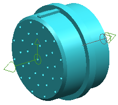

这个练习将为您显示如何审核This activity shows you how to qualify a part with terminal ports from the circular arrays that were used to create the pattern of pin locations. If you route to multi ports but do not need to see individual wires going to terminal ports, you only need to create one multi port without individual terminal ports.

Launch the Qualify a circular connector activity.
For additional information, see the following:
Use the Command Finder to search for Qualify.